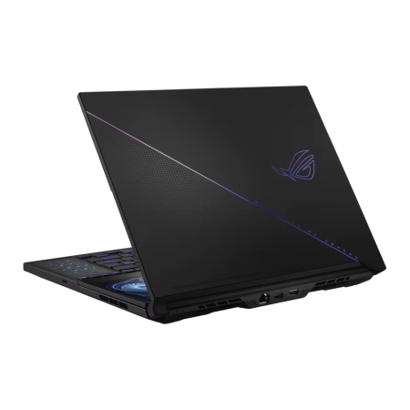

Caracteristicas
16GB RAM
Mémoria DDR4
SSD 512GB
Armazenamento rápido
Tela Full HD
15,6 1920x1080
Intel Core I7
Processador de 12ª geração
SOBRE O PRODUTO
O Notebook Gamer ABC foi feito para entregar a melhor experiencia em qualquer jogo. Com desing moderno, sistema de resfriamento eficiente e componentes de última geração, ele garante velocidade e estabilidade em todas as situações.
